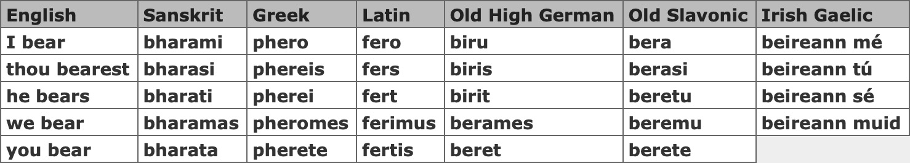
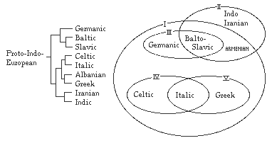
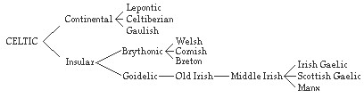
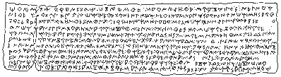
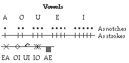
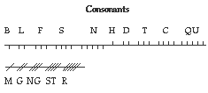
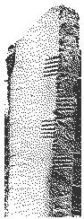
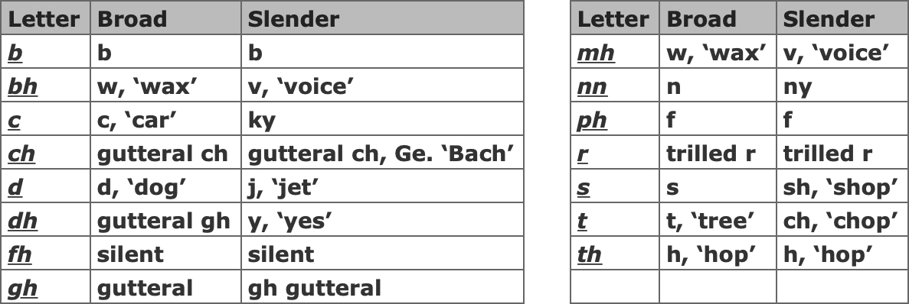

It has already been noted that the Celts spoke related languages, derived from an Indo-European language known as Common Celtic. We should go back a little further, to gain a perspective on the common roots of Indo-European languages as a whole.
Philology, or comparative linguistics, is usually traced back to the Welshman Sir William Jones, who, in 1796, gave a lecture on Indian culture in which he said:
'The Sanskrit language, whatever may be its antiquity, is of wonderful structure; more perfect than Greek, more copious than the Latin… yet bearing to both of them a stronger affinity… than could have been produced by accident; so strong that no philologist could examine all the three without believing them to have sprung from some common source, which, perhaps, no longer exists. There is a similar reason, though not quite so forcible, for supposing that both the Gothic and Celtic, though blended with a different idiom, had the same origin with the Sanskrit; and the old Persian might be added to the same family.'
Although Jones was content to point to the dispersion of the family of Noah as the source of these language families, other scholars were soon at work creating dictionaries of word roots and origins, and inventing rules to explain grammatical and phonological shifts between related languages.
Some examples of words in the different Indo-European languages may help to illustrate the similarities between them:

Exactly why these affinities exist is a matter of great debate however. Some languages spread through use of force, such as the "Romance" languages under the Roman conquest. Some languages change due to the displacement of people. Trade interaction and the introduction of new technology and ideas can account for other "loan words." But many scholars see these affinities as evidence for the spread of a people usually called the "Indo-Europeans." [25,38]
There are many models explaining language relations and language spread, two of which are illustrated by these charts [25,38]

Although he seems to be largely forgotten, James Parsons conducted philological work over thirty years before Jones' famous speech. His study, "The Remains of Japhet, being historical enquiries into the affinity and origins of the European Languages," was published in 1767. It began by comparing 1,000 Irish and Welsh words and demonstrating that their vocabularies at one time "were originally the same." As the title of his books suggests, however, Parsons also fell back on the Noah legend. Yet his analysis of Irish and Welsh, two very different Celtic languages, was on the right track.
Philologists today usually divide the Celts along linguistic boundaries, a division which corresponds to what is believed to be two successive migrational waves over Europe. The earlier wave was that of the "Q," or Goidelic, Celts who retained the "kw" sound from the original Indo-European language. Irish Gaelic, Scots Gaelic and Manx are members of the Goidelic language family. The later migrational wave was that of the "P," or Brythonic, Celts who mutated the "kw" sound into a "p" sound. Welsh, Gaulish and Lepontic (spoken in northern Italy) are members of the Brythonic language group.

This is the Celtic Language Family Tree according to some interpretations. Note that this linguistic classification is oversimplified and hides many subtle details about the relationships between the members of the family. It is also rather limited by our lack of knowledge about some ancient languages.
Still, it does reflect some important factors, such as the role of geographical isolation in the differentiation of languages. For example, two strains of Celtic resulted from the separation between continental Celts and insular island Celts.
Despite the popular belief that the Celts were illiterate, there is ample evidence that many early Celtic tribes, particularly on the Continent, could read and write. Caesar, for example, mentions that the Helvetii Celts used the Greek script to write their census lists during the Celtic migrations. Evidence of Celtic writing has also been found at Manching, Germany. [29]
The name "Korisios" is engraved in Greek letters on an iron sword found in Port, Switzerland. Believed to have been used for ritual sacrifices, the sword dates to the first century BCE and is stamped with a Celtic boar seal. The name is most likely that of the swordsmith. [29]
There are many Celtic inscriptions in Gaul, such as those on the Coligny Calendar. However, the inscriptions are not conducive to detailed analysis because of their short length.
A famous example of Celtic writing appears on the Botorrita tablet, a bronze tablet found in northcentral Spain with a Hispano-Celtic inscription. A complete translation cannot be made, but the subject seems to be a land-ownership or land-tenure contract. [38]

The Celts of Ireland and Britain used the ogam [I] (sometimes spelled "ogham," but pronounced "ohm") script for stone and wood inscriptions, such as territory markers and grave stones. The origins of ogam are very nebulous, but it seems to have been developed in Ireland, possibly in pre-Christian times. Some scholars maintain that ogam is derived from the Chalcidic form of the Greek alphabet, which was once used in Cisalpine Gaul, while others believe that ogam was derived from Roman script. [48]
Ogam is written along a central straight line, usually on the edges of stones. The line begins at the bottom of a stone, rising toward the top and continuing downward on the opposite side if necessary.
Ogam is named after Ogmios, the Celtic god associated with writing.



Most ogam stones are found in counties Kerry and Cork, Ireland, which have 121 and 81 ogam stones respectively, according to a 1945 survey. This helps to confirm a theory that west Munster was ogam's birthplace.
There are 15 ogam stones in Pembrokeshire, Wales, two stones in Devon, England and five stones in Cornwall. Ogam inscriptions are also found on the Isle of Man and in the north and east of Scotland. Ogam may have been brought to Wales by the migrations of the Dési from Ireland. [48]
There are about thirty undeciphered Pictish inscriptions written in ogam, most believed to date to the eighth and ninth centuries. The Picts probably learned ogam from the Irish who settled in Scotland. [41,48]
It is interesting to note that ogam was still in use after the Catholic church taught Irish monks Latin andthe Roman alphabet.
Ogam may have been used as a silent, secret sign-language among poets and druids; the five strokes of an ogam character could be signed with the fingers. According to one scholar, "When paganism was waning, the finger signs were used as a secret language and finally used for writing epitaphs." [48]
The ogam letters were known by the names of trees: B, betha, "birch"; C, coll, "holly"; D, daur, "oak"; and so on. [42]
Some have also argued that ogam may have been used for other purposes, such as music notation for the harp. The twenty ogam characters may correspond to twenty strings of a small practice harp in a notation called aradarch Fionn [I], or Fionn's Ladder. [48]
There is convincing evidence, especially in the myths, that ogam was used for magic and divination. This was often done with branches carved with ogam symbols.
For example, in "Tochmarc Etain [I]," the Wooing of Etain, Etain's hiding place is revealed when the druid Dálán uses four yew wands carved with ogam. There are other brief, scattered allusions to similar uses.
Later, an Irish judge, or brithem, might have "cast the woods" to divine the guilt or innocence of a defendant when reasonable doubt existed, a tradition which might have grown out of ogam wand casting. This practice, called crannachur [I], has parallels in other Celtic traditions, all with names — such as coelbren [W], prenn-denn [B] and tuel pren [C] — implying the casting of wood. [26]
Gaelic is the surviving member of the Q-Celtic languages. Irish Gaelic has been noted as having the oldest vernacular literature of Europe, dating back to the sixth century.
There are basically three main living dialects of Irish Gaelic, represented by the geographic areas of Munster, Connacht and Ulster. These dialects have small differences in their pronunciation and in their idioms of speech.
While, unfortunately, English is now the primary language in Ireland, there are small "islands of Gaelic," called Gaeltacht, where Irish Gaelic is the primary and sometimes sole language. These communities are scattered along the south and west coast of Ireland, in counties Donegal, Mayo, Galway, Kerry, Cork and Waterford.
Gaelic has a tricky set of pronunciation rules, partially because of the development of scripts in writing Irish. You should remember that while rules for pronunciation are significantly different than those of English, they are certainly more consistent.
Irish has the consonants B, C, D, F, G, H, L, M, N, P, R, S and T, and the vowels A, E, I, O and U. The vowels A, O and U, however, are designated as broad vowels while E and I are slender vowels. The sound quality of some consonants depend upon whether the vowels next to them are broad or slender.

Unfortunately, due to idiomatic usage and language development, the spelling of a word sometimes lags behind its current pronunciation. Still, these examples should give you some ideas about Gaelic pronunciation and grammar.
Dia duit!
jee ah ghwuit
"God to you," a greeting
Tá mé go maith.
tah may gu mah
"I am well."
Tá athas orm thú a fheiceáil.
tah ahas uram hoo eckal
"There is joy on me in seeing you," or "I'm glad
to see you."
Cad is ainm duit?
kad iss anyim ditch?
"What is your name?"
Cad é ba mhaith leat le hól?
kad ay ba wa lyat la haul?
"What thing would be good with you to
drink?", or "What do you want to drink?"
An bhfuil ocras ort?
un will ukrass urt?
"Is there hunger on you?", or, "Are you hungry?"
Tá an aimsir go maith.
tah un ime sher gu mah
"The weather is good."
Ní maith liom trosc.
nee mah lyum trusk
"Not good with me is cod," or, "I don't like cod."
An bhfuil tuilleadh éisc ann?
un will tilyoo ayshk unn?
"Is there more fish here?"
When the Irish settled in Scotland in the sixth century CE, they brought the Old Irish language. Since then, Scots Gaelic has evolved into its own language, yet Modern Irish and Scots Gaelic are still mutually intelligible. In many respects, Scots Gaelic is more "conservative" and has retained the features of Old Irish which Modern Irish lost; this is a common, curious phenomena of "colonial" languages. There are many innovations in Scots Gaelic as well, which further differentiate it from Modern Irish Gaelic.
Scots Gaelic was strongly influenced by the non-Gaelic speakers in Britain, especially the Brythonic Celts. This affected verb tenses as well as pronunciations.
The development of Scots Gaelic can only be traced back to the 17th century, as Classical Modern Irish was the standard written language up until this point. Although Irish texts were printed and used, it soon became clear that the languages had diverged beyond the point at which people could clearly understand their Irish books.
A Scottish standard emerged in the 17th century as native poets ignorant of Irish literary standards began composing in their own dialects. Spelling and pronunciation finally became stable in the 18th century. [16]
It is hard to trace the exact evolution of the Manx language because our knowledge of the history of the Isle of Man is itself somewhat shaky. It seems to have been first occupied by Brythonic Celts, then later colonised by Irish Celts in about the fifth century CE. Extinct dialects of Ulster and Galway were very similar to Manx. The Isle of Man was largely unscathed by the Norse invasions, although it was included in the Scandinavian Lordship of the Isles until 1266. The Isle of Man was entangled in wars between the English and the Scottish until 1346, when the English gained control of it.
A form of Irish was the language of the majority of Manx, although it was not written down until 1610. The orthography* chosen by a Welsh bishop, John Phillips, was based on English, and hence is very difficult for Irish and Gaelic speakers to decipher. Furthermore, this written representation became fixed before a series of wide ranging phonetic changes had occurred, making it unrepresentative of the later spoken language.
The first actual publication in the Manx language was not until a century later, when Bishop Thomas Wilson translated his "Principles and Duties of Christianity." He used a simpler orthographical convention than Phillips', and it has, with minor modifications, been in use ever since. [53]
Nearly all of the inhabitants of Man in the 18th century spoke Manx, the few exceptions being only administrators and English-educated. But the advent of smuggling in the second half of the century, and the beginning of tourism soon after, started a sharp decline in Manx use, and the inevitable invasion of English.
Evidence indicates that the generation born during the second quarter of the 19th century was the first truly bilingual one. Except for very rural regions, children born after 1850 were largely raised in the English language. A questionnaire in 1875 determined that only 29% of the population had a knowledge of Manx.
The 1930s saw an interest in reviving the language, when enthusiasts learned Manx first hand from the few remaining native speakers. They, in turn, taught others or opened classrooms to teach it. Fortunately, this effort has been quite successful. The 1971 census showed a 72% increase in language use from just ten years before, and a resolution in 1985 officially recognised Manx for the first time. Today, efforts at maintaining Manx are coordinated by Yn Cheshaght Ghailckagh, an organization which opened its headquarters in 1986. [53]
By the seventh century CE the English had established the extent of their borders, enclosing the British Celts in the westernmost edge they designated as 'the land of foreigners," weahlas [A], from which is derived "Wales." Any welshman found with a weapon on English soil was to have his right hand cut off.
The animosity between England and Wales continued through the centuries, heightened by England's attempts to dominate the Celtic nation.
In 1961, out of a population of 2,518,711 people, about 656,002 spoke Welsh, of which 26,223 spoke it exclusively. The lack of recognition for the language, and the fear of its eventual demise, brought many to intense struggles to secure its position in Wales. In 1962, in answer to Saunder Lewis's plea for Welsh survival, Cymdeithas yr Iaith Gymraed, "The Welsh Language Society", was formed. Its first victory came in 1967, with the Welsh Language Act, which officially recognised the equal status of Welsh.
Wales is struggling to maintain its identity as it absorbs waves of English tourists and immigrants, who seldom recognise, let alone attempt to adopt, Welsh language and culture. Nevertheless, Wales seems to be safeguarding its traditions and securing the right of children to receive their education in Welsh.
The orthography of Welsh is actually fairly simple. Nearly all of the letters are voiced, unlike the vestigial letters left after mutations in Gaelic. The consonants used are B, C, D, F, G, H, L, M, N, P, R, S, and T, with the exceptions from normal English pronunciation noted below.
The vowels I and W sometimes act like the consonants 'Y' and 'W,' respectively.
| C | always hard, as in "car" |
| CH | as in German "bach," not "church" |
| DD | softer 'th' sound, as in "thin" |
| F | always like English 'v', as in "vat" 'F' is weak, and tends to disappear at word ends |
| FF | always like English 'f', as in "fat" |
| G | always hard, as in "get" |
| NG | as in English "sing" |
| LL | a unique sound, produced by putting the tongue in L position and blowing out the sides of the mouth |
| PH | like English 'f,' as in "phone" |
| R | trilled, as in Spanish |
| RH | an 'r' accompanied by a breath of air ("aspirated") |
| S | always soft 's' as in "sit", not as in "rose" |
| SI | like English 'sh', such as "shop" |
| TH | always thick 'th' sound, as in English "the" |
| Vowel | Long | Short |
|---|---|---|
| a | ah, "father" | a, "cap" |
| e | ay, "fail" | eh, "pen" |
| i | ee, "feet" | i, "pin" |
| o | oh, "loan" | o, "pop" |
| u | ee, "feet" | short i, "in" |
| w | oo, "fool" | oo, "foot" |
| y | ee, "feet" | e (schwa), "about" or short i, "bin" |
| ae, ai | as in English "I", or "aye" |
|
| ew | quick "eh-oo" | |
| iw, uw, yw |
as in English -ew, "dew" |
|
| oi, oe | as in English |
In words of one syllable, vowels are short:
Vowels are long:
Words of more than one syllable:
Noswaith dda.
Nos wah-eeth thah
"Evening good," or "Good evening," a greeting
Bore da.
bor-ah dah
"Good morning."
Rydw i'n dda.
Ruhd oo een thah
"I am well."
Beth yw'ch enw chi?
Beth uh-ooch inoo chi?
"What is your name?"
Mae eisiau bwyd arna i.
Mah-ee aye-shy boo-id arna ee
"There is a need of food on me," or "I am
hungry."
Does dim tafarn yn y nefoedd.
Dois dim tahvarn un uh nevoith
"There is no bar in [the] heaven."
Mae hi'n braf.
mah-ee heen brahv
"It is [the weather] fine."
Ydych chi'n hoffi pysgodyn?
Ud ich cheen hoffee pisgodin?
"Do you like fish?"
Penblwydd hapus!
Pen bloo-ith hapis!
"Happy birthday!"
LLongyfarchiadau!
llong ivar chee ahd aye
"Congratulations."
Brittany, with a powerful merchant fleet, was one of the most prosperous countries in medieval Europe, to the envy of both England and France. Both countries were also constantly trying to gain power in Brittany through political intrigue. During the 14th century, England and France managed to stir up a civil war in Brittany over the succession to the throne. The church had also contributed to the loss of Breton independence by seeking to merge, for ecclesiastical purposes, with the Frankish Church. By the end of the 13th century, the Bretons were in the hands of the French, as far the church was concerned.
As the imperial power of the French increased, Breton independence become more fragile until the French armies were at last strong enough to conquer the Breton resistance in 1488. Although the French sought to unite France and Brittany through royal marriages, Breton independence remained strong.
With Napoleon's defeat came the French annexation of Brittany. France attempted to unify the nation by abolishing priests as teachers in Brittany, but, ironically, the lack of education in France resulted in a boom in the number of Breton-speaking people. By 1914 there were an estimated 1.5 million Breton speakers.
A Breton revival began in the 19th century, in the context of the larger Celtic revival. The Association Bretonne was formed in 1843, and would later become the modern Breton movement. It was suppressed by the French government in 1858, but continued its work as an underground movement.
In spite of harsh mandates and mistreatment from the French government, the Breton culture continued to flourish, partially nourished by the Celtic renaissance in Ireland. The French, nervous about the strength of the Breton language, prohibited its use in churches in 1902, but the Bretons simply ignored the ruling.
The World Wars presented opportunities for France to increase its abuse of Brittany, and they launched aggressive campaigns singling out the Breton intelligentsia. All Breton movements were banned by edict in October, 1944. The teaching of the Breton language, literature, history, or anything that could be construed as nationalist or regionalist was formally banned in early 1947.
But the Breton heritage proved amazingly tenacious. In October 1950, the remnants of the Breton Movement gathered themselves and formed another group called Kendalc'h, and several other groups were formed to work for Breton independence during the next decade. [16]
DIWAN, a Breton school system, had 755 children enrolled in 1991, a 20% increase over 1990 numbers. A crude poll conducted by the Rennes Statistics office, given to the mayors and town clerks of 580 communities in Lower Britanny, estimates that 450,000 people in all understand Breton. [7]
Brittany continues a desperate struggle for existence to this day. Forced into submission, it has since annexation been subjected to French policies designed to destroy the Breton identity. The French seek to control the Breton economy, induce large scale emigrations of Bretons, and direct the educational system and media in an anti-Breton mission.
Cornwall's name, Kernow, may have been derived from the name of a tribe, such as the Cornavi. Or, alternatively, it may be related to the common Celtic root cern, ("horn"), a name suggestive of the shape of the peninsula. In any case, the Saxons attached the term weahlas [A] ("foreign") to arrived at Corn-weahlas, or Cornwall.
Cornish is quite similar to Welsh, as it is to Breton. In fact, the Brythonic Celts who fled from Saxon invaders to Brittany (also called Amorica) named the new kingdoms Dumnonia and Cornouaille after these regions of their old home.
Cornwall was the first Celtic country to be conquered and annexed by England, and, therefore, Cornish became the first Celtic language to die under the yoke of English rule.
William Scawen's essay in 1680 about the state of the Cornish language and culture, among other things, listed sixteen reasons why the language was already in such decay. He sites first the lack of a distinctive Cornish alphabet, and next the loss of contact between Cornwall and Brittany. He appears to be the first Cornishman who actively sought to preserve the language from death, although his noble attempts could not stave off its eminent decline.
The 17th century saw the death of the last Cornish monoglots, and their passing made it clear that the language was doomed. Although some claimed that the last Cornish speaker died in 1775, there was still a very small number of people who knew Cornish. Throughout the 19th century, Cornish remnants lingered on in folk-memory and dialect speech. Another claim was made that the last surviving Cornish speaker died with the passing of John Davey in 1891.
Fortunately, Cornish language revival was popularly supported by the early 20th century. In 1901, there were enough interested people that a movement was formed to revive the language, establish a Gorsedd similar to the Welsh and to encourage Cornish sports such as hurling and wrestling. With the re-awakening of the Cornish language came a new awareness of Cornish identity, pride and heritage in the 1930s.
By 1984, seven Cornish schools were teaching the language, and 18 evening courses were being held in various Cornish institutions. Today, Cornish seems firmly re-rooted in its Celtic homeland, thanks to the dedication and persistence of its revivalists. [15]
It has been surmised that there were two Pictish languages, belonging to the two groupings of Picts, the Caledonii and the Maeatae. One seemed to be an early Brythonic (P-Celt) branch, while the other was altogether non Indo-European.
Unfortunately, no known Pictish manuscripts have survived, except for copies of lists of kings, written in Latin, although it is inconceivable that monasteries in Pictland wrote nothing. The survival of Pictish in stone inscriptions could be due to the Celts regarding it as a prestigious language for religious and learned matters.
Examples of non-Celtic Pictish personal names are Bliesblituth, Canutulachama and, in St. Ninian's treasure, Spussio. Celtic Pictish was similar to an early ancestor of Welsh, and early names of Celtic Pictish chiefs in Classical sources are Calgacus, Argentocoxos and Vepogenus. The Celtic nature of the Dark Age aristocracy is confirmed by names such as Tarain, Onuist, Unuist and Nechton/Naiton. [52]